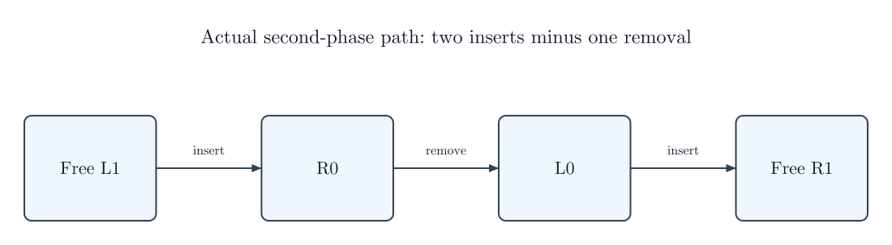
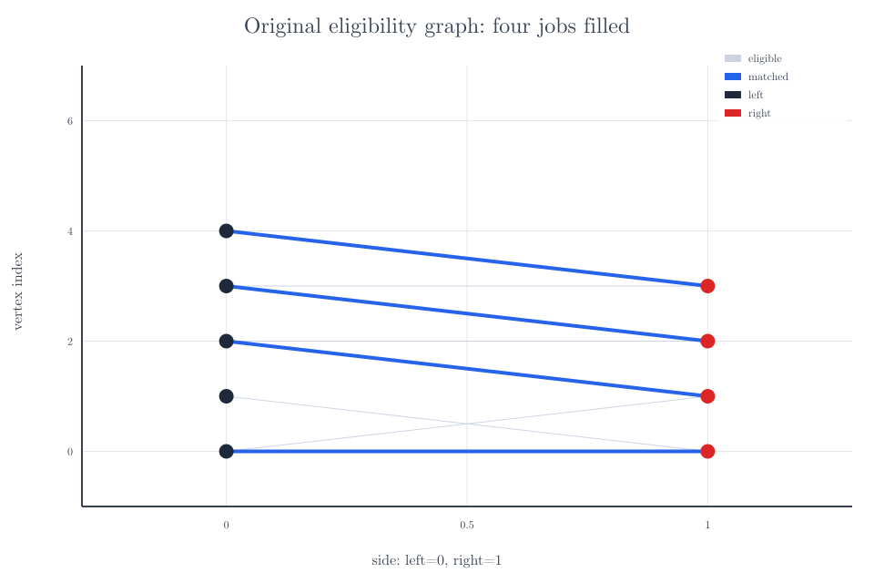
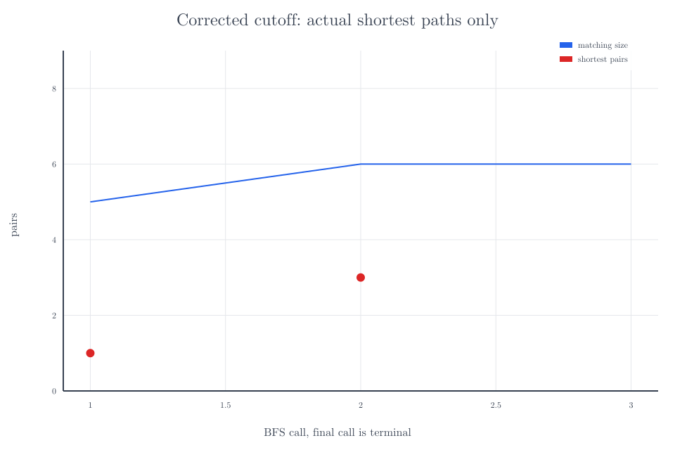
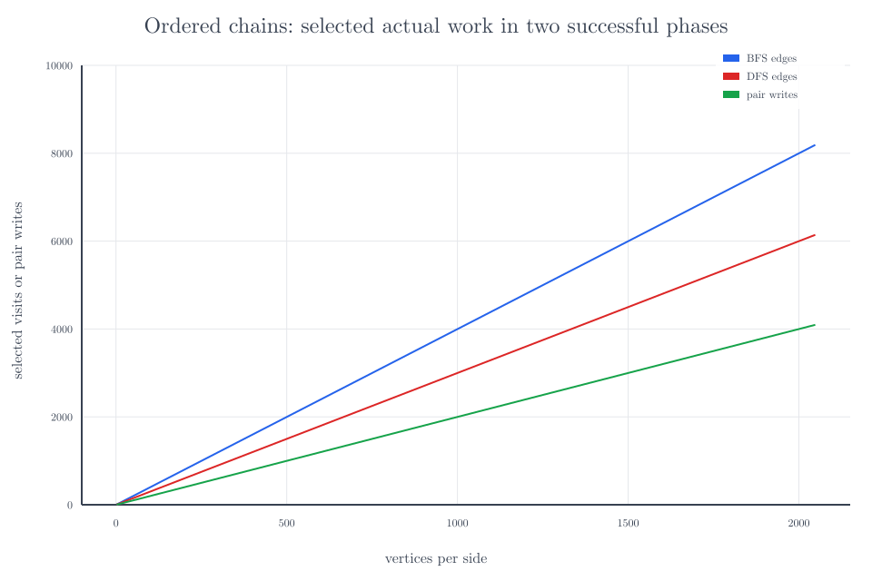
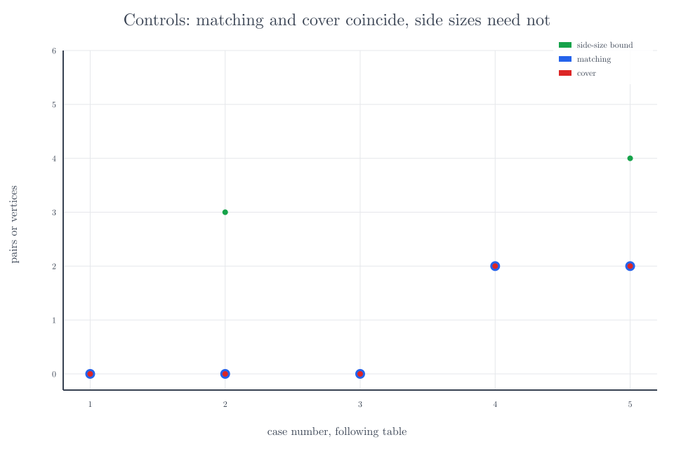

Hopcroft–Karp: shortest augmentations and a matching certificate
Abstract
Match as many eligible left/right pairs as possible while using each vertex at most once. Hopcroft–Karp groups shortest augmenting paths into blocking phases. This report begins with a two-pair rematching, retains the original five-applicant/four-job graph, and follows actual BFS labels and path stacks from the producing C++ kernel. A six-by-six counterexample explains why its former DFS needed a shortest-path cutoff. An explicit stack handles long paths, while a minimum vertex cover from the terminal BFS independently certifies optimal cardinality. Selected visit counters describe work without substituting theoretical curves for measurements.
Rematch one pair to gain another
Use edges L0–R0, L0–R1 and L1–R0 in that order. The first phase matches L0 to R0. L1 cannot take the occupied R0 directly. In the next phase, its actual augmenting path is L1, R0, L0, R1: insert L1–R0, remove L0–R0, insert L0–R1. Two forward unmatched edges and one backward matched edge gain exactly one pair.
The following program displays that actual path before its producing flip. Trace phases include the final unsuccessful BFS; a shortest-pair count of zero denotes that terminal record, not a zero-length augmentation.
#include <dm/dm.hpp>
int main() {
std::filesystem::create_directories("build");
const auto t =
dm::algorithms::hopcroft_karp_trace(2, 2, {{0, 0}, {0, 1}, {1, 0}});
std::print("| BFS call | shortest forward pairs | actual augmentations |\n| ---: | ---: | ---: |\n");
for (const auto &phase : t.phases)
std::print("| {} | {} | {} |\n", phase.bfs_index, phase.shortest_pairs,
phase.augmentations.size());
const auto &path = t.phases[1].augmentations[0];
std::print("\nActual second path left stack {}; right endpoints {}; returned left partners {}; final " "size {}; minimum-cover left {}; right {}.\n",
path.left, path.right, t.run.result.match_left,
t.run.result.size, t.run.cover_left, t.run.cover_right);
dm::graphics::Diagram d(65, 1100);
dm::graphics::DiagramNodeStyle style;
style.width = 2.5;
style.height = 2.;
style.font_size = 22;
d.node("l0", {0, 0}, std::format("Free L{}", path.left[0]), style).node(
"r0", {4.5, 0}, std::format("R{}", path.right[0]), style).node(
"l1", {9, 0}, std::format("L{}", path.left[1]), style).node(
"r1", {13.5, 0}, std::format("Free R{}", path.right[1]), style).edge(
"l0", "r0", "insert").edge("r0", "l1", "remove").edge("l1", "r1",
"insert").text(
{6.75, 2.5}, "Actual second-phase path: two inserts minus one removal",
24).save_svg("build/hopcroft_karp_tiny.svg");
if (path.left.size() != 2 || t.run.result.size != 2 ||
t.run.result.match_left != std::vector<std::size_t>{1, 0})
throw std::runtime_error("tiny augmentation");
}| BFS call | shortest forward pairs | actual augmentations |
|---|---|---|
| 1 | 1 | 1 |
| 2 | 2 | 1 |
| 3 | 0 | 0 |
Actual second path left stack [1, 0]; right endpoints [0, 1]; returned left partners [1, 0]; final size 2; minimum-cover left [0, 1]; right [].

Why augmentations and shortest blocking phases work
A matching M contains no two edges incident to the same vertex. An augmenting path alternates edges outside and inside M, starting and ending at free vertices. With q forward unmatched edges it has q-1 matched edges, so its graph-edge length is 2q-1. Taking the symmetric difference flips these statuses and gives
If a larger matching exists, its symmetric difference with M decomposes into alternating paths and cycles; at least one path has one more edge from the larger matching, and is augmenting for M. Conversely any augmentation enlarges M. Thus absence of an augmenting path characterizes maximum cardinality. Maximum does not mean unique, weighted-optimal or preferred by every applicant.
BFS starts simultaneously from every free left vertex. A left distance counts matched-right-to-left hops. An edge to a free right vertex at left depth d gives q=d+1 forward pairs. The kernel retains the minimum such q and stops expanding left labels at or beyond that cutoff. DFS follows increasing left distances and accepts a free right endpoint only at that minimum q. Per-phase adjacency cursors avoid rescanning an edge; a heap-allocated explicit left stack replaces recursive calls. Dead-end pruning changes working labels, while the trace keeps the actual pre-DFS BFS labels.
Within a phase, the chosen shortest paths are vertex-disjoint and form a maximal collection: another disjoint shortest path would remain searchable. After all are flipped, the shortest augmenting-path length strictly increases. The standard phase argument gives O(sqrt(V)) successful phases: short lengths can increase only O(sqrt(V)) times before reaching that scale, and then the symmetric-difference decomposition with an optimum bounds the remaining number of missing pairs by O(sqrt(V)). Each phase costs O(E+V) with the current-edge representation. For V at least1 the resulting bound is O((E+V)sqrt(V)), with O(E+V) ordinary working/output storage. Including V matters when isolated vertices are supplied; an empty graph with vertices still requires initialization. Duplicate input entries count in E but cannot inflate cardinality.
Preserve the original five applicants and four jobs
Keep the original eight eligibility edges, including the applicant who has only job 0 available. The algorithm fills all four jobs and leaves one applicant free. Its ordered choices are unchanged for this fixture. The grey lines in the native plot are eligible pairs; thick blue lines are the returned matching. The axes keep separate left and right index spaces.
The terminal unsuccessful BFS also yields a certificate. Let Z_L and Z_R be its alternating reachable vertices, starting at free left vertices. Then
Every edge is covered: an edge from a reachable left vertex enters a reachable right vertex, while every other edge already meets L minus Z_L. No free right vertex is reachable at termination. Each matched edge contributes exactly one endpoint to C, and unmatched left vertices are reachable. Therefore C=M. Every matching has size at most any vertex cover, so these two feasible objects certify optimality without trusting a claimed phase count. The cover comes from the actual terminal BFS, with no additional edge traversal.
#include <dm/dm.hpp>
int main() {
std::filesystem::create_directories("build");
const auto g = dm::algorithms::hopcroft_karp_example_graph();
const auto r =
dm::algorithms::hopcroft_karp_run(g.n_left, g.n_right, g.edges);
std::print("| applicant | returned job |\n| ---: | --- |\n");
for (std::size_t u = 0; u < g.n_left; ++u) {
if (r.result.match_left[u] == dm::algorithms::kBipartiteUnmatched)
std::print("| {} | free |\n", u);
else
std::print("| {} | {} |\n", u, r.result.match_left[u]);
}
std::print("\nMatching size {}; cover left {}; cover right {}; cover size {}; successful phases {}; BFS " "calls including terminal {}.\n",
r.result.size, r.cover_left, r.cover_right,
r.cover_left.size() + r.cover_right.size(), r.augmenting_phases,
r.work.bfs_calls);
dm::algorithms::hopcroft_karp_graph_plot(g, r.result,
"Original eligibility graph: four jobs filled").save_svg("build/hopcroft_karp_original.svg");
for (auto[u, v] : g.edges)
if (std::find(r.cover_left.begin(), r.cover_left.end(), u) == r.cover_left.end() &&
std::find(r.cover_right.begin(), r.cover_right.end(), v) ==
r.cover_right.end())
throw std::runtime_error("uncovered edge");
if (r.result.size != 4 || r.cover_left.size() + r.cover_right.size() != 4)
throw std::runtime_error("original certificate");
}| applicant | returned job |
|---|---|
| 0 | 0 |
| 1 | free |
| 2 | 1 |
| 3 | 2 |
| 4 | 3 |
Matching size 4; cover left []; cover right [0, 1, 2, 3]; cover size 4; successful phases 1; BFS calls including terminal 2.

Correct the shortest-path cutoff, not the optimum definition
The older BFS detected whether any augmentation existed, but its DFS accepted a free right endpoint at any depth. On the public six-by-six regression fixture below, frozen instrumentation of that original C++ implementation found a second-phase shortest distance of 3 forward pairs while its chosen path had 4. Both implementations return cardinality 6; the defect was the mismatch with the stated shortest blocking-phase invariant and its analysis.
The corrected trace has a second-phase path with exactly 3 forward pairs. The plotted matching size includes the terminal BFS; shortest-path points include only successful phases. Captured finite labels can include an already discovered cutoff frontier that BFS never expands. SIZE_MAX labels mean undiscovered and are displayed as unseen.
#include <dm/dm.hpp>
int main() {
std::filesystem::create_directories("build");
const auto g = dm::algorithms::hopcroft_karp_cutoff_graph();
const auto t =
dm::algorithms::hopcroft_karp_trace(g.n_left, g.n_right, g.edges);
std::vector<double> calls, sizes, successful, shortest;
std::size_t size = 0;
std::print("| BFS call | pre-DFS left labels | shortest forward pairs | actual path sizes | matching " "size after phase |\n| ---: | --- | ---: | --- | ---: |\n");
for (const auto &phase : t.phases) {
std::vector<std::string> labels;
std::vector<std::size_t> lengths;
for (auto d : phase.left_distance)
labels.push_back(d == dm::algorithms::kBipartiteUnmatched ? "unseen"
: std::to_string(d));
for (const auto &p : phase.augmentations) {
lengths.push_back(p.left.size());
++size;
if (p.left.size() != phase.shortest_pairs)
throw std::runtime_error("nonshortest path");
}
calls.push_back(phase.bfs_index);
sizes.push_back(size);
if (phase.shortest_pairs) {
successful.push_back(phase.bfs_index);
shortest.push_back(phase.shortest_pairs);
}
std::print("| {} | {} | {} | {} | {} |\n", phase.bfs_index, labels,
phase.shortest_pairs, lengths, size);
}
auto p = dm::graphics::RPlot::create();
p.line(calls, sizes, "matching size", {37, 99, 235}, 2.).points(
successful, shortest, "shortest pairs", {220, 38, 38}, 6.).title(
"Corrected cutoff: actual shortest paths only").x_label(
"BFS call, final call is terminal").y_label("pairs").y_limits(0, 9).save_svg("build/hopcroft_karp_cutoff.svg");
if (t.phases[1].shortest_pairs != 3 ||
t.phases[1].augmentations[0].left.size() != 3 || t.run.result.size != 6)
throw std::runtime_error("cutoff regression");
}| BFS call | pre-DFS left labels | shortest forward pairs | actual path sizes | matching size after phase |
|---|---|---|---|---|
| 1 | ["0", "0", "0", "0", "0", "0"] | 1 | [1, 1, 1, 1, 1] | 5 |
| 2 | ["1", "2", "1", "0", "2", "3"] | 3 | [3] | 6 |
| 3 | ["unseen", "unseen", "unseen", "unseen", "unseen", "unseen"] | 0 | [] | 6 |

A maximum matching need not be unique. Across all 65536 four-by-four simple graphs, frozen cardinalities agree before and after this change, while 3767 ordered matching choices differ. The original five-by-four fixture retains both orientation arrays. The stable public result layout and maximum-cardinality contract are preserved; arbitrary older tie choices are not a uniqueness guarantee.
Actual work and long paths without recursive stack growth
The ordered chain family has n vertices on each side. For each i below n-1, supply (i,i) then (i,i+1), followed by (n-1,0). For n at least2, the first phase matches n-1 direct pairs, and the second uses an alternating path with n forward pairs to fill the final slot. This is a two-phase family, not a worst-case example attaining the square-root phase bound.
Selected producing visits are 4n-2 BFS edge examinations, 3n-1 DFS edge examinations and 2n-1 path-pair writes in this family. Each pair write assigns both orientation arrays. Initialization, adjacency allocation/copying, queue allocation, cover extraction and capture copies are outside these counters. The deepest explicit left stack has n vertices. A separate native test exercises n=20000 under ASan/UBSan; it does not rely on the process's recursive-call stack.
#include <dm/dm.hpp>
int main() {
std::filesystem::create_directories("build");
std::vector<double> x, bfs, dfs, writes;
std::print("| vertices per side | edges | matching size | successful phases | BFS edges | DFS edges | " "path-pair writes | max left-stack size |\n| ---: | ---: | ---: | ---: | ---: | ---: | ---: " "| ---: |\n");
for (std::size_t n : {2, 8, 32, 128, 512, 2048}) {
const auto g = dm::algorithms::hopcroft_karp_chain_graph(n);
const auto r =
dm::algorithms::hopcroft_karp_run(g.n_left, g.n_right, g.edges);
std::print("| {} | {} | {} | {} | {} | {} | {} | {} |\n", n,
g.edges.size(), r.result.size, r.augmenting_phases,
r.work.bfs_edges, r.work.dfs_edges,
r.work.path_pairs_written, r.work.max_path_left_vertices);
x.push_back(n);
bfs.push_back(r.work.bfs_edges);
dfs.push_back(r.work.dfs_edges);
writes.push_back(r.work.path_pairs_written);
if (r.result.size != n || r.augmenting_phases != 2 ||
r.work.bfs_edges != 4 * n - 2 || r.work.dfs_edges != 3 * n - 1 ||
r.work.path_pairs_written != 2 * n - 1 ||
r.work.max_path_left_vertices != n)
throw std::runtime_error("chain producing counts");
}
auto p = dm::graphics::RPlot::create();
p.line(x, bfs, "BFS edges", {37, 99, 235}, 2.).line(x, dfs, "DFS edges",
{220, 38, 38}, 2.).line(
x, writes, "pair writes", {22, 163, 74}, 2.).title(
"Ordered chains: selected actual work in two successful phases").x_label("vertices per side").y_label("selected visits or pair writes").y_limits(0, 10000).save_svg("build/hopcroft_karp_work.svg");
}| vertices per side | edges | matching size | successful phases | BFS edges | DFS edges | path-pair writes | max left-stack size |
|---|---|---|---|---|---|---|---|
| 2 | 3 | 2 | 2 | 6 | 5 | 3 | 2 |
| 8 | 15 | 8 | 2 | 30 | 23 | 15 | 8 |
| 32 | 63 | 32 | 2 | 126 | 95 | 63 | 32 |
| 128 | 255 | 128 | 2 | 510 | 383 | 255 | 128 |
| 512 | 1023 | 512 | 2 | 2046 | 1535 | 1023 | 512 |
| 2048 | 4095 | 2048 | 2 | 8190 | 6143 | 4095 | 2048 |

Complete policies, empty sides and a terminal record
New run/trace calls default to one million combined vertices and one million supplied edge entries, each with zero disabling that policy. Every endpoint is checked before policies and adjacency allocation. Legacy hopcroft_karp has no optional policy caps, while count and container representation checks still apply. Duplicate edges retain order and count as supplied work, but cannot create additional disjoint partners.
Tracing starts from the known empty matching. Each BFS adds 1+n_left logical record/distance units, admitted before that BFS's work. Each actual path with q forward pairs adds 1+2q units, admitted before history copies and flipping. The terminal failed BFS is included. Defaults cap these units at one million, with zero disabling capture policy; run without tracing ignores it. Counts exclude working buffers, ordinary output, metadata, capacity and byte/peak-memory use. Exceeding a limit throws without returning sampled, truncated or partial history. For the two-phase chain family, retained units are 8n+1; this is a logical count, not a memory measurement.
Empty sides and isolated vertices still produce a terminal BFS record. A zero shortest-pair field is meaningful only as its failure sentinel; no such path is augmented. The matching's sentinel is SIZE_MAX in either orientation. The native graph view accepts any valid matching, checks its dimensions/inverses/edge membership/cardinality, and applies separate display quotas before allocating plot series.
#include <dm/dm.hpp>
int main() {
std::filesystem::create_directories("build");
using Graph = dm::algorithms::HopcroftKarpGraph;
const std::vector<Graph> cases = {Graph{}, Graph{3, 4, {}}, Graph{0, 3, {}},
Graph{2, 2,
{{0, 0}, {0, 0}, {1, 0}, {0, 1},
{1, 0}}},
Graph{4, 4, {{0, 0}, {1, 1}, {2, 1}}}};
const std::vector<std::string> labels = {"empty", "isolated", "empty left",
"duplicates", "disconnected"};
std::vector<double> x, matching, cover, bound;
std::print("| case | left | right | supplied edges | matching size | cover size | successful phases | " "BFS calls |\n| --- | ---: | ---: | ---: | ---: | ---: | ---: | ---: |\n");
for (std::size_t i = 0; i < cases.size(); ++i) {
const auto &g = cases[i];
const auto t =
dm::algorithms::hopcroft_karp_trace(g.n_left, g.n_right, g.edges);
const auto c = t.run.cover_left.size() + t.run.cover_right.size();
std::print("| {} | {} | {} | {} | {} | {} | {} | {} |\n", labels[i],
g.n_left, g.n_right, g.edges.size(), t.run.result.size, c,
t.run.augmenting_phases, t.run.work.bfs_calls);
x.push_back(i + 1);
matching.push_back(t.run.result.size);
cover.push_back(c);
bound.push_back(std::min(g.n_left, g.n_right));
if (c != t.run.result.size)
throw std::runtime_error("control certificate");
}
const auto tiny = dm::algorithms::hopcroft_karp_chain_graph(2);
const auto exact =
dm::algorithms::hopcroft_karp_trace(2, 2, tiny.edges, {4, 3, 17});
bool capture = false, vertices = false, domain = false;
try {
(void) dm::algorithms::hopcroft_karp_trace(2, 2, tiny.edges, {4, 3, 16});
} catch (const std::length_error &) {
capture = true;
}
try {
(void) dm::algorithms::hopcroft_karp_run(2, 2, tiny.edges, {3, 3, 0});
} catch (const std::length_error &) {
vertices = true;
}
try {
(void) dm::algorithms::hopcroft_karp_run(2, 2, {{2, 0}}, {1, 1, 1});
} catch (const std::invalid_argument &) {
domain = true;
}
std::print("\nExact capture units {}; one-short capture rejected {}; one-short combined-vertex cap " "rejected {}; malformed endpoint wins over exceeded policy {}.\n",
exact.captured_entries, capture, vertices, domain);
auto p = dm::graphics::RPlot::create();
p.points(x, bound, "side-size bound", {22, 163, 74}, 4.).points(
x, matching, "matching", {37, 99, 235}, 7.).points(x, cover, "cover",
{220, 38, 38}, 4.).title("Controls: matching and cover coincide, side sizes need not").x_label("case number, following table").y_label("pairs or vertices").y_limits(-.3, 6).save_svg("build/hopcroft_karp_controls.svg");
if (!capture || !vertices || !domain || exact.run.result.size != 2)
throw std::runtime_error("complete policies");
}| case | left | right | supplied edges | matching size | cover size | successful phases | BFS calls |
|---|---|---|---|---|---|---|---|
| empty | 0 | 0 | 0 | 0 | 0 | 0 | 1 |
| isolated | 3 | 4 | 0 | 0 | 0 | 0 | 1 |
| empty left | 0 | 3 | 0 | 0 | 0 | 0 | 1 |
| duplicates | 2 | 2 | 5 | 2 | 2 | 2 | 3 |
| disconnected | 4 | 4 | 3 | 2 | 2 | 1 | 2 |
Exact capture units 17; one-short capture rejected true; one-short combined-vertex cap rejected true; malformed endpoint wins over exceeded policy true.

Validation and primary reference
Native ASan/UBSan tests compare all 65536 four-by-four simple graphs with an independent bitmask matching oracle. They independently reconstruct BFS distances, verify that every producing path is shortest, vertex-disjoint within its phase and alternating before flipping, rebuild both orientation arrays, check capture counts/work bounds and verify every edge against an equal-size cover. Additional controls cover the cutoff regression, duplicates/order, empty sides, exact/one-short policies, validation priority, deep ownership, public fixtures/plot validation and the 20000-vertex-per-side chain. Six existing tests include 500 random comparisons with Kuhn matching. Frozen comparisons retain maximum cardinalities and the original fixture while explicitly recording changed tie choices. An independent Python oracle additionally checks 1547 ordered, reversed, duplicated, fixed and chain graphs: 3754 actual paths, 10197 BFS labels, bitmask optima and terminal covers agree. Documentation examples, representative hovers, real MEP execution, all inspected native figures and both result/image exports are required before retiring the legacy report.
The primary source is [J. E. Hopcroft and R. M. Karp, An n^(5/2) Algorithm for Maximum Matchings in Bipartite Graphs](https://web.eecs.umich.edu/~pettie/matching/Hopcroft-Karp-bipartite-matching.pdf), SIAM Journal on Computing 2(4), 225–231, 1973, [DOI 10.1137/0202019](https://doi.org/10.1137/0202019). Its shortest/disjoint-path phase argument underlies the method. The supplied-input implementation additionally permits isolated vertices and repeated edge entries and uses an iterative current-edge DFS. The report's fixed eligibility graphs and synthetic chains are not application data or historical runtime measurements from that paper.